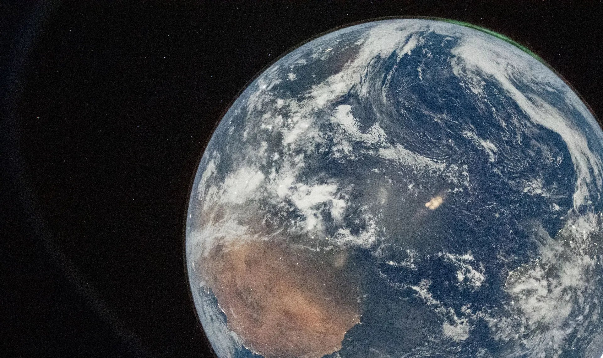
Quantified Evidence Navigator for Combustion Hazards
Team [TEAM NAME] · Members [NAMES OF TEAM MEMBERS]
A dashboard that summarizes, ranks and interprets NASA's flight fire experiments for the air a lunar crew will breathe.
“The intermediate oxygen concentration used on the Moon will likely be 30% or greater, with a corresponding pressure of 10.2 psi or less.”Flame in Freefall challenge statement
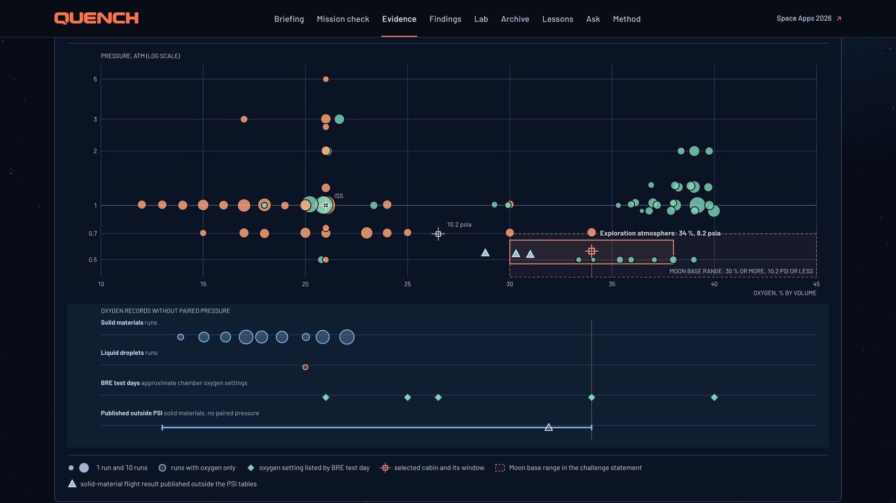
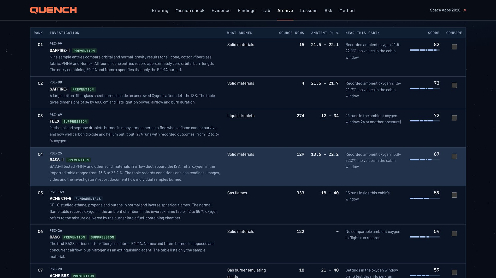
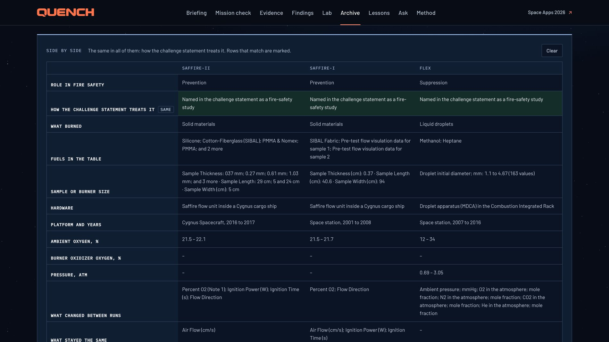
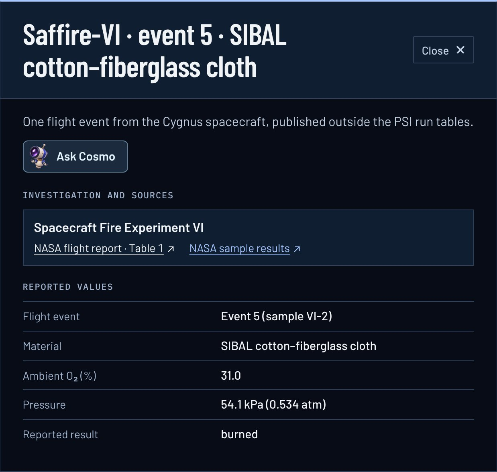
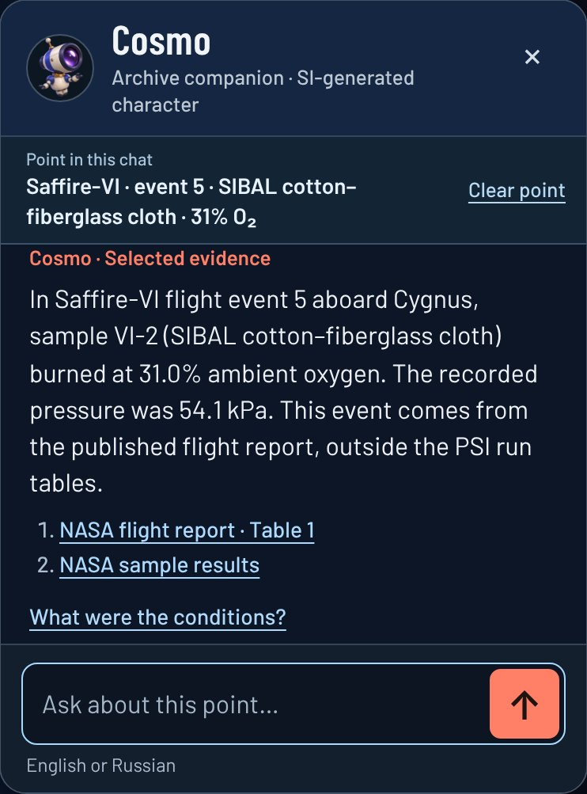
Cosmo is an SI-generated character and is marked so on the site.
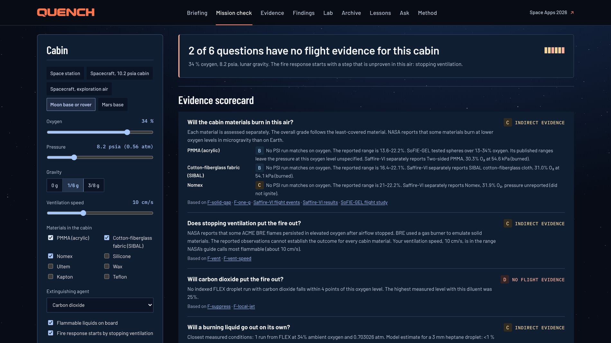
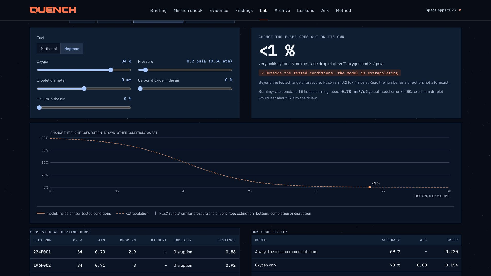
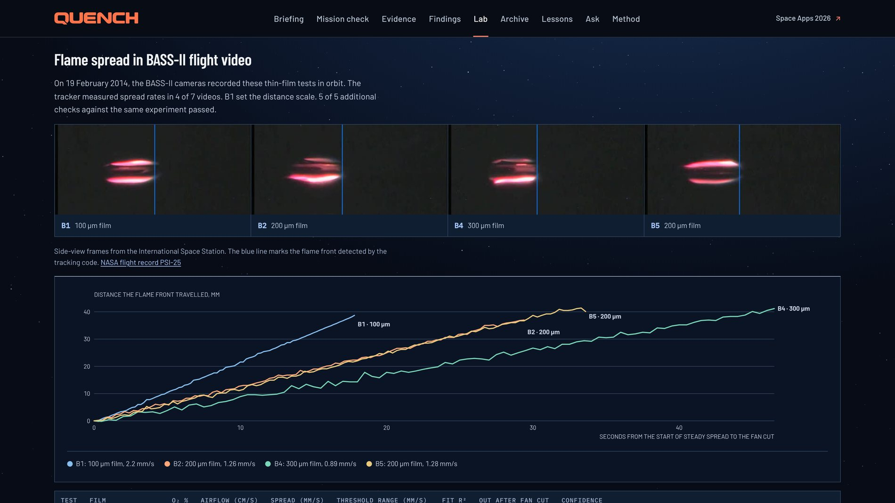
NASA data: Physical Sciences Informatics combustion investigations, BASS-II raw video and report, Saffire-VI flight report, Researcher's Guide to ISS Combustion Science. Photographs: NASA. Research prototype, not a design basis. Not an official NASA product. Slides laid out with SI assistance; pictures are screenshots of the live site; the QUENCH logo and Cosmo are SI-generated images.
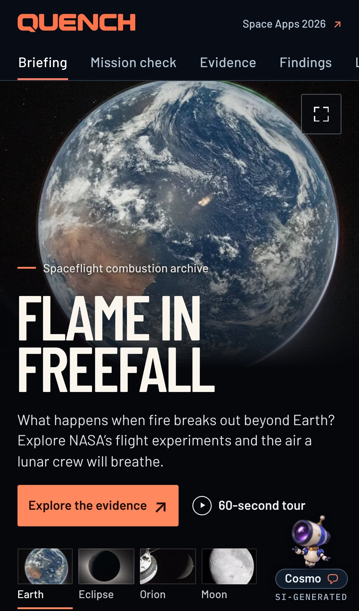
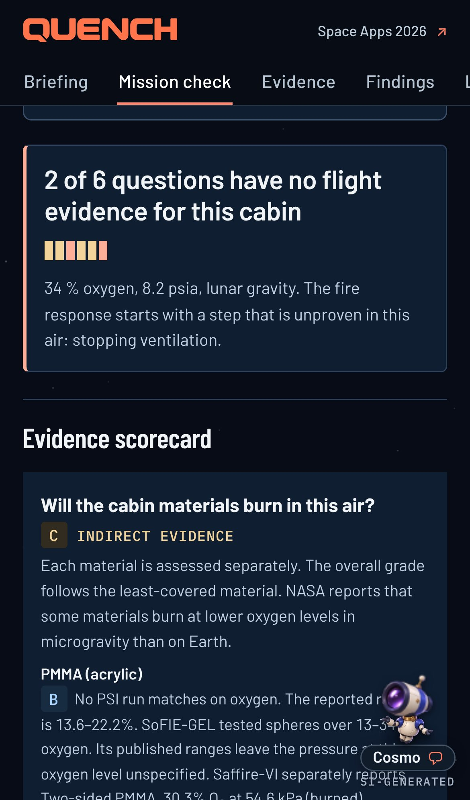
Works on a phone. Seven-stop tour: 60 seconds.